Demo setup: scuba → loaded AM0701 → nozzle
Current architecture · 10 Nov 2026. One motor, one nozzle, friction brake. This is the complete functional layout. Exact fittings, pressure protection, motor exhaust collector and brake mounting still need qualification.

How the demo fits the film
The 17-shot storyboard and video preview frame a future system that distributes compressed air and generates cooling locally. This demo supports shots 8–10. Show the external shaft brake explicitly. A proximity sensor commands the pulse valve through the controller, with the 10 s limit and emergency shutoff taking priority. The first instrumented bench run can use manual control.
The friction brake rejects shaft work as heat. Shots 14–15 describe a different modeled configuration that recovers useful work. Label vortex-tube measurements, motor measurements, ideal expansion models and CFD separately. Do not use historical CFD as an AM0701 result. Review scope and source hashes.
Connections and outlets
Selected first configuration
- One AM0701; one nozzle. Swap the existing wide-slot design and a low-restriction round control one at a time. Existing CAD is not a verified motor fitting or pressure rating. Nozzle catalogue.
- Adjustable friction brake. Start light and seek measured 200 W, then 400 W. Reference 400 W / 2000 RPM: 1.91 N·m torque. At 20 cm contact radius and assumed μ=0.30: 9.55 N tangential force, 31.8 N summed pad normal force. These are sizing targets; the motor point is unverified. Load calculations.
- No cold-output buffer selected. The scuba cylinder is the upstream store. Keep the cold path short. Output volume adds heat pickup and transient delay.
- Pulse control. The existing Cv 0.23 solenoid is restrictive for the assumed 15 g/s screen. Size the replacement for the actual pressure/flow point. For the first bench test, a rated full-flow manual valve can serve the pulse; use an accessible emergency shutoff. Automatic mode needs a suitable timer/controller and fail-closed valve.
Alternative outlets and comparison tests
A multi-nozzle manifold is a later comparison, not extra cold supply. Equal splitting of an assumed 15 g/s gives 7.5 g/s per outlet for two, or 3.75 g/s for four, before imbalance. It does not establish reach or cooling. Qualify the single outlet first.
A vortex tube requires its own regulated compressed-air feed. It is an alternative test branch with both a cold outlet and a hot rejection outlet. Do not connect it downstream of the near-atmospheric motor exhaust as a second cooling stage. No vortex branch or propeller is installed in this selected friction-brake layout.
Compare a regulator-only bypass at matched measured mass flow to isolate the motor contribution. Log inlet/outlet temperatures, pressures, mass flow, torque and RPM together. The bypass test is separate from the selected demo path.
Evidence and unresolved items
Source document audit · Motor specification and caveats · Load equations and assumptions · Earlier assembly analysis.
Receipt of the AM0701 is user-confirmed. Loaded 15 g/s, inlet 22°C, 25% heat return and target dilution are assumptions. No guaranteed outlet temperature, no new CFD and no hardware qualification. Cylinder stamp, first-stage identity/flow, shaft and port drawings, lubrication, low-temperature limits, brake rating, hose dimensions and nozzle attachment remain open.
The Excalidraw contains editable component boxes, text and arrows. Its layout is flattened because the converter cannot handle the three section groups. The Mermaid source controls the grouped SVG/PNG.
Do not feed tank pressure or the first-stage intermediate pressure directly into the motor. Pressure-rated components belong on the compressed-air side. This schematic does not specify thread adapters, pressure-relief settings or fabrication dimensions.